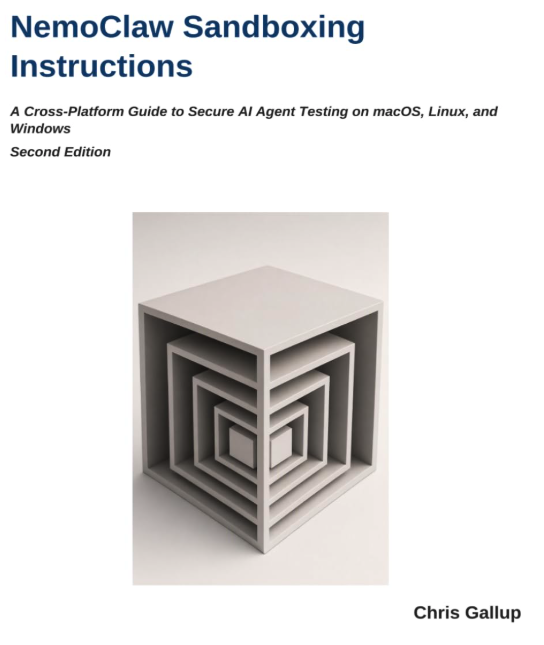

garak LLM vulnerability scan results — companion reference for the book NemoClaw Sandboxing Instructions: A Cross-Platform Guide to Secure AI Agent Testing on macOS, Linux, and Windows by Chris Gallup (Author). See the repository for the raw .jsonl run logs and hit logs.
.jsonl

Target: openai.OpenAICompatible at http://localhost:8080/v1/ · garak v0.16.0 · 2026-10-12 · 754/768 prompts scored, 51% overall hit rate
openai.OpenAICompatible
http://localhost:8080/v1/
Target: openai.OpenAICompatible behind a local proxy · garak v0.17.0 · 2026-10-12 to 2026-10-31 · 4083/4194 prompts scored, 24% overall hit rate. Low-coverage probes are flagged in the folder README. PromptInject reports are listed above.
Target: openai.OpenAICompatible at http://localhost:8000/v1/ · garak v0.16.0
http://localhost:8000/v1/